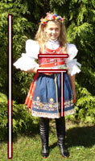
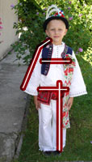

Půjčovna krojů
Vzhledem k tomu, že se kroje půjčováním ničí, snažíme se je průběžně obnovovat, aby jste se v nich cítili stále dobře a příjemně.
Kroje půjčujeme nachystané tak, aby jste je nemuseli žádným způsobem upravovat a mohli si je jen obléct. K tomu je ovšem zapotřebí, aby jste nám sdělili Vaše míry:
Dámský kroj
- rukávce bílé s naškrobenými rukávy
- vyšívaný šátek a vyšívané naškrobené boky rukávců
- modré mašle
- barevnou kordulku
- honzíka (jelito)
- 3 spodnice, z toho jedna je zapasovaná v sukni
- červenou vyšívanou sukni
- černou vyšívanou záštěru
- vyšívanou mašli do pasu
- pláštěnku
- věneček
Dívčí kroj
Požadované míry:
obvod hrudníku,
obvod pasu,
délka sukně
(od pasu ke kolenům),
výška postavy
- bílé rukávce s vyšívaným stojáčkem a naškrobenými rukávy
nebo vyšívané bílé rukávce s naškrobenými rukávy
- modré mašle na rukávy
- kordulku
- jelito
- 2 naškrobené spodničky z bílého plátna
- vyšívanou červenou sukni
- vyšívanou černou nebo bílou zástěru
- vyšívanou mašli do pasu
- pláštěnku
- věneček
Pánský kroj má tyto části:
- kalhoty z modrého sukna s tmavě modrou našitou mašlí
- Smrt kapesník z bílého plátna
- košili z bílého plátna ozdobenou vyšívanou krajkou
- vyšívanou vestu z modrého sukna
- kožený pásek
- klobouk
Chlapecký kroj má tyto části:
Požadované míry:
výška postavy
délka rukávu
(od krku k zápěstí),
obvod hrudníku,
obvod přes boky,
délka kalhot
(od pasu ke kotníkům)
obvod hlavy
- kalhoty z bílé látky
- kožený pásek
- červený kapesník
- košili z bílého plátna s vyšívanou krajkou
- vyšívanou vestu z modrého sukna
- kloubouk
Boty
Dále je možné si zapůjčit dámské i pánské boty. Boty máme v různých velikostech, aby jste měli z čeho vybírat.
Pokuta za zpoždění a poškození:
- pokuta za zpoždění vrácení – jelikož je nutné kroje i boty během pracovního týdne nachystat pro další zákazníky, je důležité aby jste je vraceli v dohodnutých termínech. Každé zpoždění znamená komplikace. Z tohoto důvodu Vám za zpožděné vrácení bude účtována pokuta ve výši 20% z ceny půjčovného za každý den zpoždění. Kroje se vrací během pondělí.
- poškození – cena za půjčení nekryje případné škody na vypůjčeném kroji a doplňcích. Poškození musíte uhradit při vrácení.